| 日付 | 2014年5月17日（土） |
|---|---|
| 山域 | 足尾 |
| メンバー | 家族（妻、長女・3歳、長男・0歳） |
| 山行形態 | 子連れ日帰り |
| アクセス | 車 |
| ルート (Map) | 駐車場 (9:35) - (10:44) 備前楯山 (12:00) - (12:55) 駐車場 |
今週は、先週計画していて行き損ねた備前楯山に行く。
アクセスが非常に悪い山の割に、コースタイムが短いため
なかなか足が向かなかったが、子連れにはちょうど良い山だ。
足尾山塊の山にはこれまで来たことがなく、今回が初登山となる。
9時過ぎに駐車場に到着。標高1020m。
予報に反して小雨がパラついている。そして驚くほど寒い。
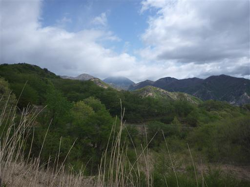
車で少し天気の回復を待つが、子連れだとそう長くは待機できない。
しばらくして出発することにする。
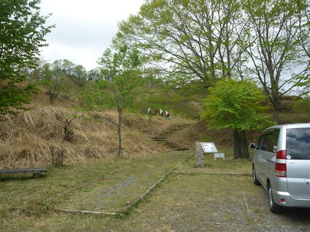
少し登った所から、目指す備前楯山の頭が見える。
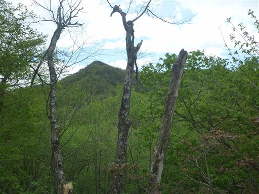
白いキノコに覆われた木が立っている。
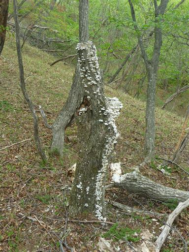
足元にはカラマツの枝がたくさん落ちている。
新緑のまだ新しそうな枝だが、最近風の強い日があったのだろうか？
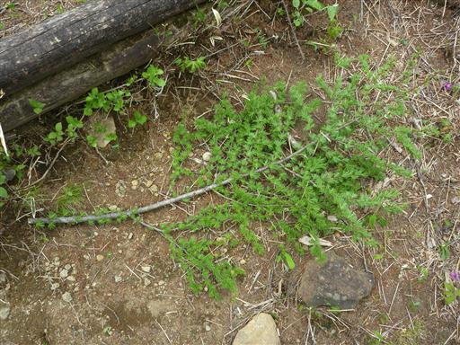
松ぼっくりも無数に落ちている。
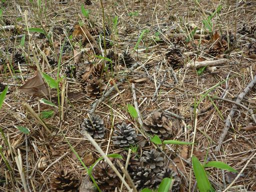
新緑の季節はもうほとんど終わりで、辺りは緑がかなり濃くなっている。
所々にヤマツツジが咲いている。
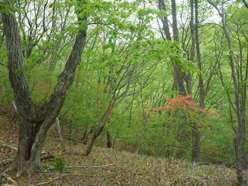
こちらはミツバツツジ。濃いピンク色だ。
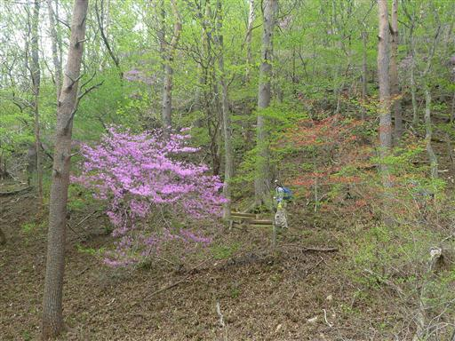
階段の一段一段が大きく、結構登りにくい。
土が流されていて半ば障害物のようになっている。
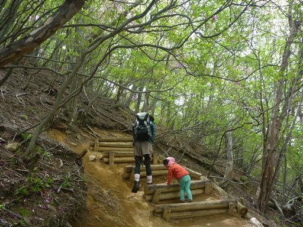
娘はあまり機嫌がよくなく、すぐに足が止まる。
しゃがみこんで、花びらや松ぼっくりを拾っている。
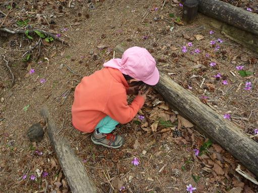
登山道周辺のあちらこちらにミツバツツジが咲いている。
残念ながらアカヤシオはもう咲いていないようだ。
先週来れていたらアカヤシオを見られたかもしれないのだが…
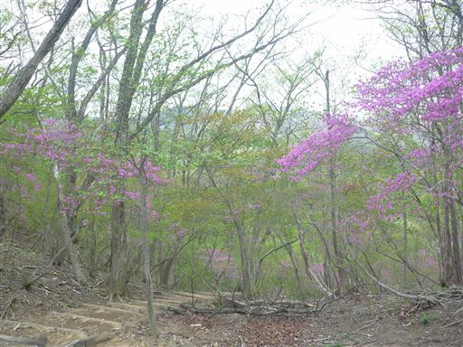
こんなところに白樺の木が生えている。
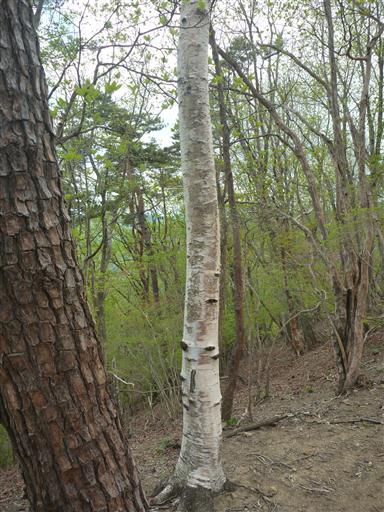
尾根が細くなり山頂部が見えてきた。
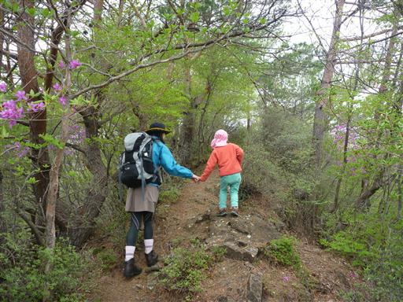
備前楯山山頂到着。標高1272m。
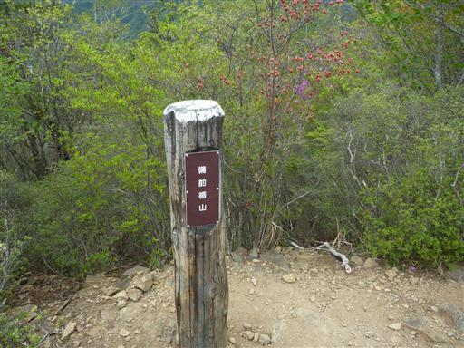
山頂はなかなか展望が良い。
ちょうど社山と半月山の間の阿世潟峠から男体山が見えている。
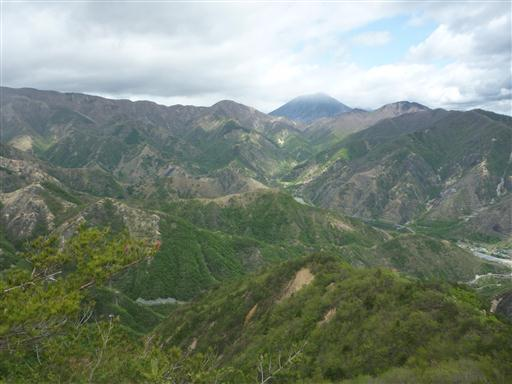
夕日岳など安蘇山塊の山々。かつて歩いて尾根道だ。
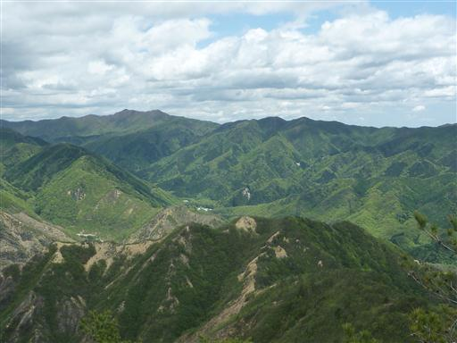
こちらは足尾山塊の中心部。
左端が庚申山、その奥にあるはずの主峰、皇海山は雲の中のようだ。
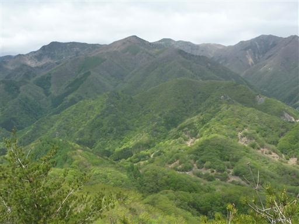
足元には木が生えていない赤茶けた斜面が広がっている。
足尾銅山の過去の煙害による影響だ。
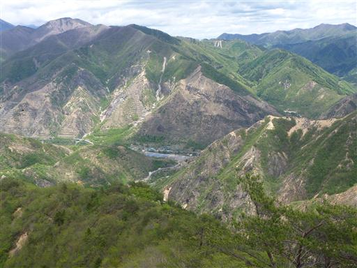
今日は時間があるため山頂でゆっくりと昼食をとる。
しばらくすると雲が少なくなって日差しが出てきた。
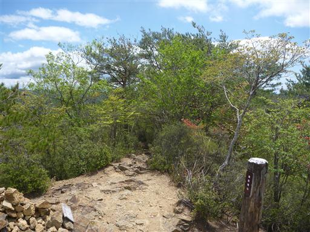
ゆっくり休憩したら下山開始。登山道が一本しかない山なので、元来た道を引き返す。
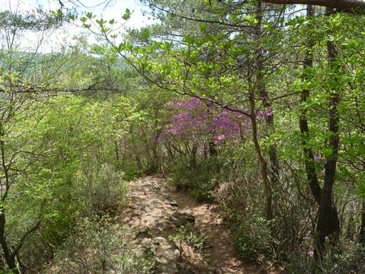
明るい新緑の中をのんびりと下って行く。
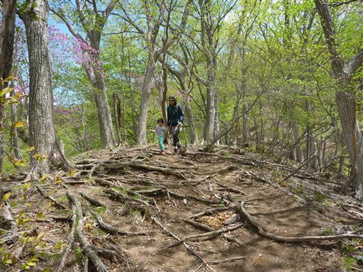
日差しがある方が、新緑もツツジの花も美しい。
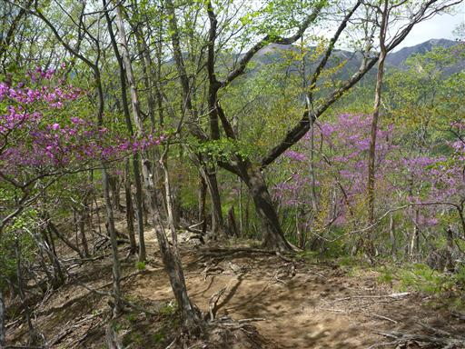
木に飲み込まれた標識。少し痛々しい。
木が小さい時に付けられ、長い年月をかけて木が生長した結果だ。
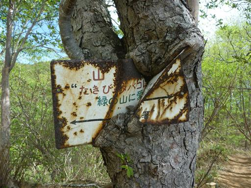
展望が開けると駐車場はもうすぐだ。
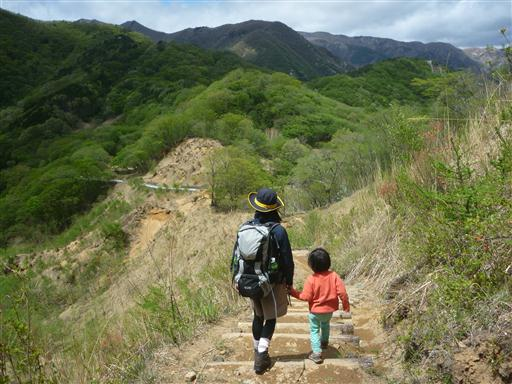
駐車場に無事下山。
登る前はどんよりとしていたが、今は太陽が出ている。
山々に囲まれた、なかなか雰囲気の良い場所だ。
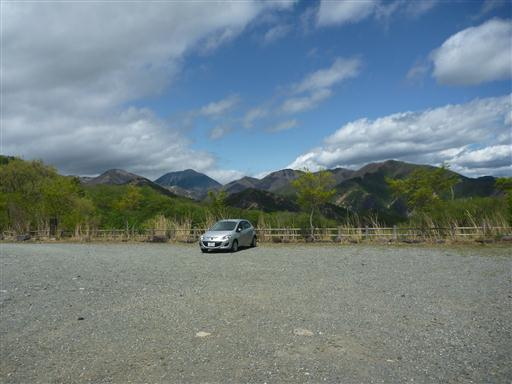
帰りに草木ダムに寄り道する。渡良瀬川に建設されたダムだ。
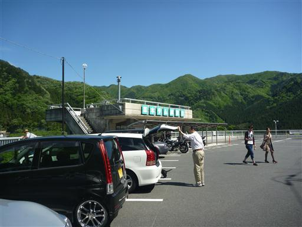
展望台からダムを望む。
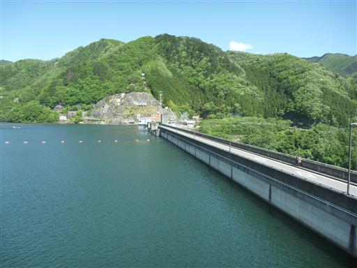
高さ140m。利根川水系有数の巨大なダムだ。
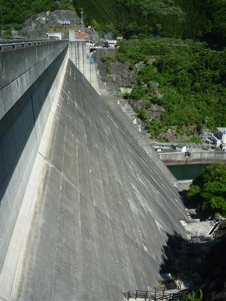
広大な草木湖を望む。ここからも遠くに男体山の頭が見えている。
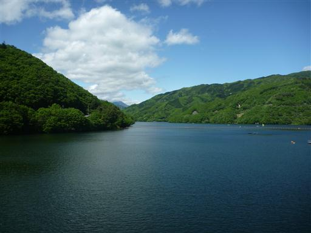
噴水。かなりの高さまで吹き上がっている。
ダムにある噴水の多くは水質保持のためにあるらしい。
ダム観光を終えたら帰路につく。短い山行だったが、
あまり訪れたことのない山域だったため、新鮮な展望を満喫できた。
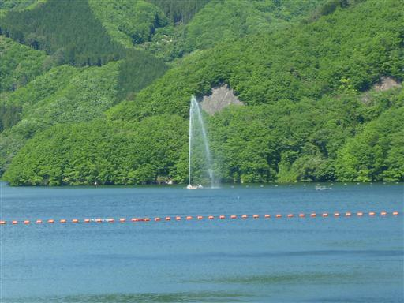